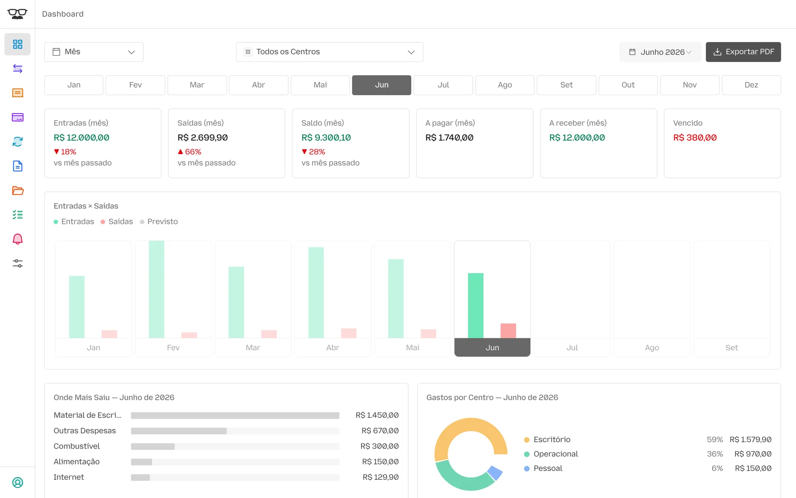

Registros Descentralizados
Notas no porta-luvas, comprovantes no celular, boletos no e-mail. Na hora de somar, falta peça.
Inova+Campo 2026Linha de Desafio 3 — Competitividade e Inclusão Econômica
O Gerentia registra receitas e despesas a partir de uma foto, de um áudio ou de uma mensagem no WhatsApp. A inteligência artificial lê, interpreta e classifica; o produtor confirma; o lançamento entra no painel, nos relatórios e nas pendências.
Uma solução desenvolvida pela Cropware

Painel: captura real, conta de demonstração. Conversa: simulação com dados fictícios.
01 O Desafio
Para muitos pequenos e médios produtores, a gestão financeira acontece fora de qualquer sistema: no cupom do posto, no print do Pix, no boleto do insumo e na memória. Não falta vontade de organizar. Falta tempo, e as ferramentas tradicionais pedem uma rotina de escritório que o campo não tem.
Notas no porta-luvas, comprovantes no celular, boletos no e-mail. Na hora de somar, falta peça.
Com as contas da casa e da atividade no mesmo bolso, fica impossível saber o que a produção realmente gera.
Sem um lugar único, é difícil responder o que vence nesta semana, o que já foi pago e quanto entrou no mês.
Planilhas e sistemas tradicionais exigem digitação, disciplina e treinamento. É o tempo que a rotina de campo não tem.
Cada aplicativo novo é um hábito novo. A adoção trava quando a ferramenta pede mais do que devolve.
O WhatsApp já faz parte do dia a dia do produtor. É o ponto de entrada com menos atrito para registrar o que acontece.
Quanto eu gastei com diesel este mês?
Se responder exige uma tarde de planilha, a gestão não acontece. O Gerentia foi desenhado para que essa resposta saia em segundos, a partir de registros feitos no momento da compra.
02 A Solução
O Gerentia tem dois lados que trabalham juntos: o WhatsApp, para registrar e perguntar, e o aplicativo, na web e no iPhone, para ver, organizar e exportar. Os dois leem e gravam no mesmo banco de dados.
Gerentia em produção, conta de demonstração com dados fictícios (junho de 2026). Toque para ampliar.
03 Inteligência Artificial
O assistente do Gerentia entende mensagens do dia a dia, lê documentos e responde perguntas sobre as finanças. Todo lançamento novo volta para conferência antes de ser gravado.
“paguei 850 de diesel no pix” vira um rascunho de despesa com valor, categoria, status e forma de pagamento. Uma mensagem com vários gastos vira uma fila, um lançamento por vez. Notas de voz são transcritas e seguem o mesmo caminho.
Google Gemini com chamada de ferramentas: 12 ações declaradas, entre registrar, corrigir, cancelar, pagar, consultar e lembrar.
Foto ou PDF de recibo, nota, boleto ou comprovante Pix. Extrai fornecedor, CNPJ, valor, data, forma de pagamento, número da nota e itens, e informa o grau de confiança da leitura.
Leitura multimodal com saída estruturada (JSON). O arquivo fica anexado ao lançamento.
No texto e no áudio, a categoria é escolhida dentro do plano de contas da própria conta, e não de uma lista genérica. O servidor confere se a escolha existe. Sem pista suficiente, o assistente pergunta.
Na leitura de fotos, a classificação parte de categorias rurais pré-definidas. A categoria é sempre mostrada antes de gravar.
Resumo do mês, gastos por categoria, comparação com o mês anterior, últimos lançamentos e centros de custo, respondidos no próprio chat.
A IA não escreve consultas ao banco. Ela aciona consultas fixas e parametrizadas, isoladas por organização, e redige a resposta com os números que o sistema calculou.
Corrige o último lançamento (“era 550, não 500”), cancela, marca conta como paga, cria e conclui lembretes. Guarda o contexto das últimas mensagens da conversa.
Histórico curto, de 16 falas. Estados pendentes expiram em 10 minutos.
Ao receber um comprovante, procura uma conta em aberto do mesmo fornecedor ou CNPJ, com valor compatível, e pergunta se é o pagamento dela. Nunca dá baixa sozinho.
A identidade (CNPJ ou fornecedor) é obrigatória. Valor parecido, sozinho, não basta.
Escolha um caso. Durante a reprodução, a coluna ao lado mostra em que etapa do processamento está cada mensagem.
Simulação ilustrativa. As mensagens do assistente reproduzem os textos do sistema; nomes, valores e datas são fictícios.
O produtor fotografa o cupom e envia. A IA lê os campos e devolve um resumo para conferir. Como foi pago no débito, o lançamento já nasce como pago, com a foto anexada.
A nota de voz é transcrita e interpretada como receita já recebida. O assistente confirma a categoria e pergunta só o que ficou faltando. Aqui faltou o centro de custo.
O assistente não calcula de cabeça. Ele chama consultas prontas do sistema e escreve a resposta com os números que elas devolvem.
A conta do insumo foi lançada como a pagar. Quando o Pix sai, o comprovante encontra essa conta e o produtor só confirma. Ela vira paga, com data de pagamento e comprovante anexado.
O assistente sabe qual foi o último lançamento e corrige o valor na hora. Lembretes vão direto para Pendências.
A conversa demonstrativa é interativa, com cinco casos: foto de nota, nota de voz, pergunta, baixa por comprovante, e correção e lembrete. Ela está disponível em gerentia.app/inovacampo. As seções de abertura e de WhatsApp deste documento trazem duas dessas conversas completas.
Como a IA é mantida sob controle no Gerentia.
04 Integração com WhatsApp
Pelo WhatsApp, o produtor registra, corrige, dá baixa e consulta. Cada ação lê e grava no mesmo banco de dados que alimenta o painel e os relatórios.
Simulação com dados fictícios. O painel é uma ilustração baseada na interface real.
| Data | Venc. | Origem | Categoria | Centro de Custo | Status | Valor R$ |
|---|---|---|---|---|---|---|
| 14/10 | — | Posto Boa Vista | Combustível | Lavoura | Pago | −850,00 |
| 12/10 | — | Cooperativa | Venda de Grãos | Lavoura | Recebido | +18.000,00 |
| 11/10 | — | Posto Boa Vista | Combustível | Lavoura | Pago | −412,30 |
| 10/10 | 30/10 | Agro Insumos Cerrado | Defensivos | Lavoura | Pagar | −2.480,00 |
| 08/10 | — | Casa do Produtor | Ração Animal | Pecuária | Pago | −1.150,00 |
| 05/10 | — | Energia Rural | Energia | Casa | Pago | −386,40 |
O tempo de registro em condições reais de campo é um dos indicadores propostos para o piloto. Esta comparação descreve etapas, não tempos medidos.
05 Tecnologia e Maturidade
A arquitetura usa serviços gerenciados de nuvem, isola os dados no próprio banco e acessa a IA só pelo servidor. Abaixo estão os componentes e as evidências de maturidade disponíveis hoje.
Não atribuímos um nível de maturidade tecnológica (TRL) por conta própria. As evidências estão separadas por natureza, para que a banca avalie a equivalência.
| Frente | Situação | Detalhe |
|---|---|---|
| Lançamento por foto, texto e voz no WhatsApp | Operacional | Em uso interno desde junho de 2026. |
| Leitura de documentos por IA, no app e no WhatsApp | Operacional | Foto ou PDF, com resumo para confirmar. |
| Consultas financeiras e lembretes pelo WhatsApp | Operacional | Respostas com números calculados pelo sistema. |
| Baixa de conta por comprovante | Operacional | No ar. Faz parte da bateria de testes a executar. |
| Fatura de cartão pelo WhatsApp | Em validação | Publicada em agosto de 2026, ainda sem teste de ponta a ponta. |
| Perfis de equipe (vários usuários) | Em validação | Implementado, ainda não usado em produção. |
| App Android | Em validação | Construído e testado em aparelho real. Publicação na Google Play pendente. |
| Avisos e resumo semanal pelo WhatsApp | Desligado | Existe no código. Desligado por decisão de produto; os avisos chegam no app. |
| Integração com extrato bancário (Open Finance) | Planejado | Estudo feito, implementação não iniciada. |
| Módulo fiscal e custo por hectare | Planejado | Fora do escopo desta proposta. |
06 Aplicação no Agronegócio
Situações comuns em pequenas e médias propriedades e como cada uma se resolve no Gerentia, só com recursos que já existem.
A IA lê o valor, os litros e a forma de pagamento. O lançamento vai para o centro Lavoura, com o cupom anexado.
WhatsApp — foto
Fica como conta a pagar, com vencimento. Aparece em Pendências, no painel e nos avisos do app. Quando o Pix sai, o comprovante dá a baixa.
WhatsApp — texto; app — Pendências
Vira receita recebida na categoria Venda de Grãos. Há também Venda de Gado entre as categorias prontas.
WhatsApp — voz
Centros de Custo separam Casa, Lavoura e Pecuária. O painel e os relatórios filtram por centro, e as categorias têm grupos próprios para Fazenda e para Pessoal.
App — Centros de Custo e categorias
A resposta chega no próprio chat, com os números do sistema, sem abrir planilha.
WhatsApp — pergunta
Relatório do período em PDF, com gráficos e os comprovantes anexados, ou em CSV para quem prefere planilha. Por categoria, por centro ou de contas a pagar e receber.
App — Relatórios
O Gerentia organiza o financeiro. Não substitui contador nem agrônomo.
07 Proposta de Validação
A tecnologia central já existe e opera em produção. Se o Gerentia for selecionado, o piloto avalia sua aplicação entre pequenos e médios produtores rurais, em condições reais de uso.
Cadastro, vínculo do WhatsApp por código e configuração dos centros de custo de cada propriedade. Orientação curta, no próprio celular.
Os produtores registram a rotina financeira pelo WhatsApp e pelo app, com suporte da equipe.
Uso sem acompanhamento próximo, para observar adoção e frequência reais.
Consolidação dos indicadores, entrevistas e relatório com recomendações para replicação.
Duração, número de produtores e regiões serão definidos com o programa.
| Indicador | Como medir | Fonte |
|---|---|---|
| Facilidade de adoção | Tempo do cadastro ao primeiro lançamento; parcela dos participantes que vincula o WhatsApp | Registros do sistema |
| Tempo de registro | Tempo entre o envio da mensagem e a confirmação do lançamento | Registros do sistema, com medição nova |
| Frequência de uso | Lançamentos por produtor por semana, por canal: WhatsApp, foto no app ou manual | Registros do sistema (origem do lançamento) |
| Completude dos lançamentos | Parcela com categoria, centro de custo, vencimento (quando a pagar) e comprovante anexado | Registros do sistema |
| Precisão da classificação por IA | Parcela das categorias sugeridas aceitas sem troca, e correções feitas depois | Registros do sistema, com medição nova |
| Utilidade das consultas | Perguntas feitas ao assistente e avaliação das respostas pelos produtores | Registros e questionário |
| Satisfação | Questionário ao fim das etapas de uso acompanhado e de avaliação | Questionário |
| Viabilidade de replicação | Tempo de orientação, demanda de suporte por produtor e custo de operação por usuário | Equipe do piloto |
08 Quem Desenvolve
A Cropware é uma empresa de software focada no agronegócio brasileiro. Nasceu da vivência de quem rodou o Brasil construindo mercado no campo, e a equipe é formada por engenheiros agrônomos da região de Rio Verde, Goiás.
O objetivo é construir software que funcione de verdade na fazenda: simples e pensado para a operação real. Além do próprio ecossistema, a Cropware desenvolve software sob demanda para o setor: aplicações web e mobile, integrações, APIs e automações com IA.
Inteligência, gestão e automação para o agronegócio. Status conforme cropware.com.br.